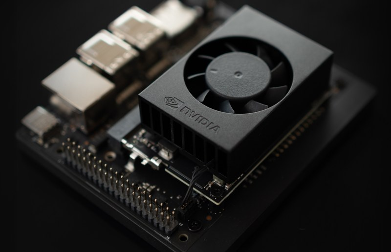
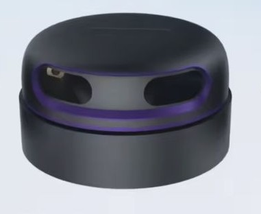
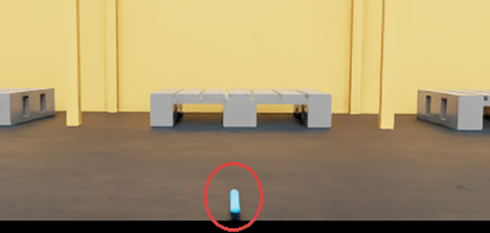

하위 제어 보드, Jetson, 카메라 첫 연결에서 통신·제때 응답 확인

하위 MCU STM32H743
모터 4개 제어 펌웨어 첫 탑재 (잠금)
노트북, Jetson 10분 연결 누락 0
명령 왕복 시간 최대 약 10 ms

Jetson Orin Nano Super
팔레트 인식과 경로 계획용 컴퓨터
6코어 최대 부하 5분, 20 ms 명령 간격
최대 29.6 ms (80 ms 미만 통과)

RealSense D435i
팔레트 찾는 카메라와 관성 센서
Jetson에 연결해 2분간 기록
자이로 400, 가속도 200 Hz 수신

RPLIDAR A2M12
주변 모양 읽는 2D LiDAR 센서
장비 미도착으로 아직 연결 못 함
도착하면 노트북과 Jetson에 연결
모터와 엔코더 연결은 메인보드와 부품이 11월 20일에 발송된 뒤 진행합니다.
카메라 영상에 찍히던 경로 표시선을 빼 팔레트 인식 방해를 없앰


찍힌 계획 경로 표시선
미리 만든 지도로 시작 위치를 찾으면 약 82 % 확정, 틀린 확정 0곳

새 공장 배치 이동 재확인 결과, 미확정은 아래쪽 반복 구역
제자리 확정 67곳앞뒤 이동 확정 2곳운용자 선택 14곳
| 공장 배치와 시험 방식 | 스스로 확정 | 틀린 확정 |
|---|---|---|
| 공장 배치 A, 미리 찍은 스캔만으로 지도와 맞춰 계산 | 84곳 중 69곳 (82 %) | 0곳 |
| 공장 배치 B, 위치 없이 켜서 스스로 찾고 출발까지 | 68/84 (81 %) 중앙 오차 2 cm | 0곳 |
| 공장 배치 B, 못 찾으면 앞뒤 0.3 m 다시 보기 (+20초, 기본 꺼둠) | 67 → 69곳 (+2곳 확정) | 0곳 |
실제 차량은 좌표와 방향을 지도에 미리 등록한 정해 둔 시작 자리에서 출발합니다.